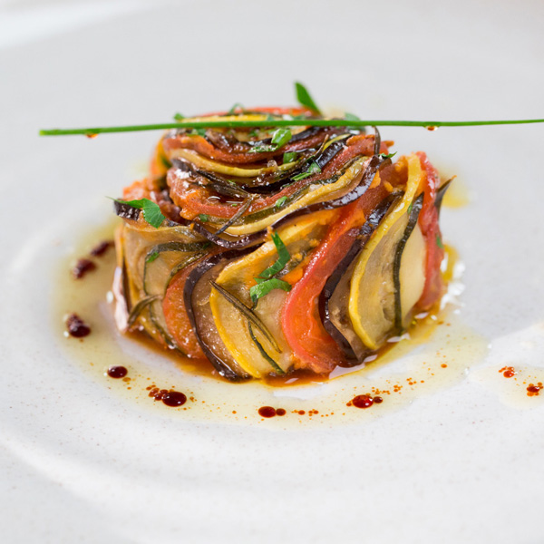

Os segredos da culinária francesa sem barreiras geográficas
Somos uma escola de gastronomia 100% online dedicada à arte da culinária francesa. Aprenda técnicas e receitas clássicas por meio de vídeo-aulas detalhadas ministradas pelo próprio Chef Remy, fundador da escola e do renomado restaurante "Le Ratatouille". Cursos no seu ritmo, no conforto da sua casa e com o todo o nosso apoio. Aqui na Remy's Cuisine, todos podem cozinhar!
Cursos
Pães Franceses
Pratos Quentes Franceses

Doces franceses
Curso de pães franceses
3 Módulos
10 horas
Baguettes
Ficelles
Brioches
Fougasse
Croissant
Pain de campagne
Pain de Mie
Curso de pratos quentes franceses
4 Módulos
16 horas
Soupe à l'oignon
Coq au vin
Cassoulet
Beef bourguignon
Ratatouille
Cheese Soufflé
Aligot
Fondue Savoyarde
Tartiflette
Quiche Lorraine
Vichyssoise
Curso de doces franceses
4 Módulos
20 horas
Tarte tatin
Clafoutis
Crêpes
Eclair au chocolat
Kouign Amann
Crème brûlée
Chocolate Profiteroles
Macarons
Madeleines
Meringues
Mille-feuille
Choux à la crème
Vantagens
Aulas 100% online, acessíveis de qualquer lugar do país.
Plataforma de vídeos adaptada para dispositivos mobile: você estudando no caminho do trabalho.
Aulas gravadas pelo Chef Remy, eleito um dos melhores chefs do Mundo.
Material de apoio 100% em português e detalhado.
Certificado de conclusão de curso assinado pelo Chef Remy.
Mentores para tirar dúvidas em até 2h*.
Fórum para compartilhar dúvidas e aprendizados com a comunidade.
*Horário comercial.
O Chef
Antes de se tornar um dos melhores chefs do mundo e fundar o "La Ratatouille" ao lado de seu sócio, o crítico de gastronomia, Anton Ego, a vida de Remy passou por muitos altos e baixos. Apesar de demonstrar talento nato para sentir cheiros e combinar alimentos, seu sonho de se tornar um grande Chef nunca foi levado a sério por sua família, amigos e pela sociedade. Tudo bem que não é comum encontrarmos um rato com sonhos como esse por aí, muitos nem sabiam que eles podiam se comunicar, mas tudo mudou com Remy.
Sem nunca se conformar com as normas e desistir de seus sonhos, Remy superou todos os obstáculos e hoje se encontra à frente de um restaurante com três estrelas Michelins. Um feito incrível para uma cidade com uma gastronomia rica e concorrida como Paris.
Com o intuito de estimular outras pessoas e animais a se apaixonarem pela culinária, Remy fundou a Remy's Cuisine, a primeira escola online de gastronomia comandada por um rato.
"Trabalhamos juntos há quase quinze anos e tudo o que aprendi na cozinha eu devo a Remy e a sua paciência em ensinar." - Alfredo Linguini
"A melhor comida que já comi na minha vida foi feita pelas pequeninas mãos do Chef Remy. Ao contrário do que ele costuma dizer, não acredito que todos possam cozinhar, ou pelo menos cozinhar bem, mas Remy é um dos poucos que sabem." - Anton Ego
"Remy é o melhor Chef que eu poderia ter. Sua técnica é primorosa e delicada. Já trabalhei em inúmeros restaurantes de Paris e nunca vi nada igual. Aprender com Remy é aprender com o melhor" - Colette Tatou
"Meu irmão é o orgulho da família, não sabíamos admirar a gastronomia até Remy começar a cozinhar para a gente. Adoro quando ele faz suflê de queio, é a minha comida favorita!" - Emile
Plano Bronze
R$ 60
Acesso a apenas um curso por vez.
Acesso a material detalhado em pdf, inclusive uma tabela de conversão de medidas.
Certificado de conclusão do curso assinado pelo chef Remy.
Fórum para tirar dúvidas e compartilhar experiências com os demais alunos.
Plano Silver
R$ 80
Tenha acesso a todos os cursos do site ao mesmo tempo.
Acesso a material detalhado em pdf, inclusive uma tabela de conversão de medidas.
Projeto avaliado visualmente pelos mentores da escola.
Certificado de conclusão do curso assinado pelo chef Remy.
Fórum para tirar dúvidas e compartilhar experiências com os demais alunos.
Plano Gold
R$ 120
Tenha acesso a todos os cursos do site ao mesmo tempo.
Acesso a material detalhado em pdf, inclusive uma tabela de conversão de medidas.
Projeto avaliado visualmente pelos mentores da escola.
Certificado de conclusão do curso assinado pelo chef Remy.
Fórum para tirar dúvidas e compartilhar experiências com os demais alunos.
Encontro 1x mês com um dos mentores da escola para tirar dúvidas e pedir aconselhamento via Skype.
Baixe as vídeo-aulas para assistir offline.
Baixe o áudio das vídeo-aulas
Aqui na Remy's Cuisine acreditamos que todos podem aprender a cozinhar e que você irá se surpreender com a qualidade dos nossos cursos. Porém, caso ainda tenha dúvidas, oferecemos um período de 15 dias, a partir do pagamento da primeira mensalidade, para conhecer a nossa plataforma. Se você mudar de ideia durante esse período, poderá pedir a devolução do seu dinheiro. Integralmente e sem questionamentos, é uma garantia que oferecemos a você.
Assine a newsletter da escola e fique por dentro de novos lançamentos e promoções